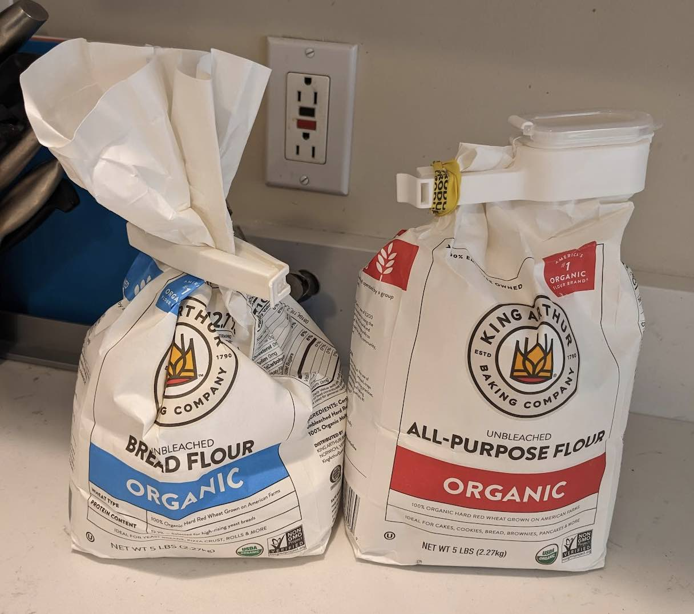
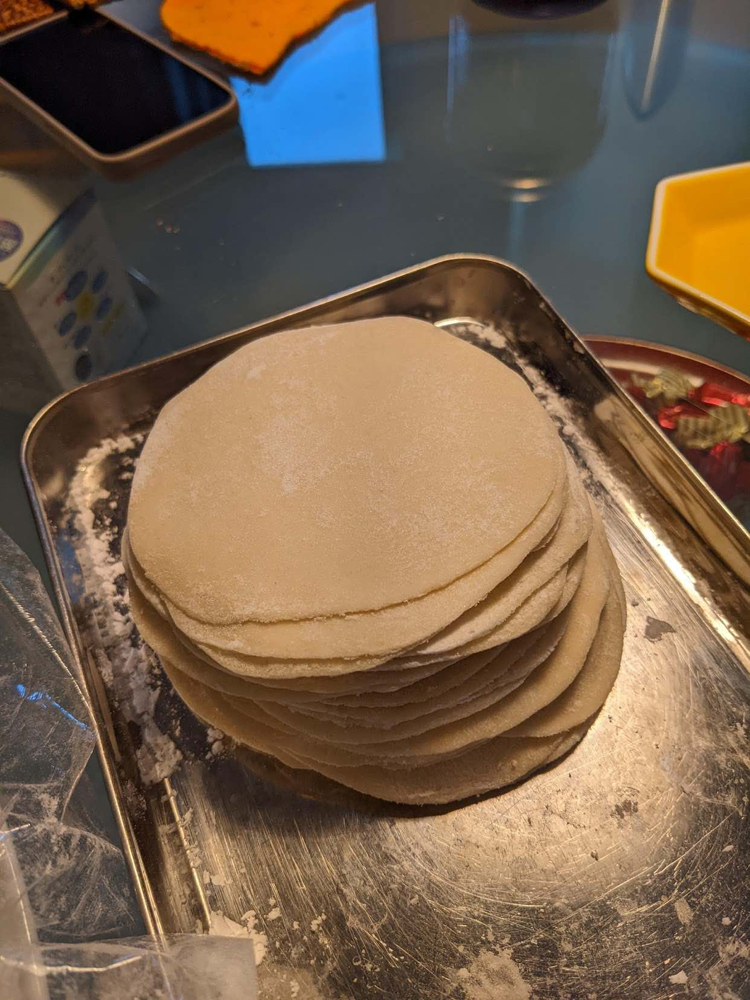

Table of Contents
1. はじめに
餃子は皮から作るとモチモチしてとても美味しいです。こちら(ボストン近郊在住です)で手に入る餃子の皮は冷凍で、妙に薄かったり冷凍焼けしていたりで今ひとつなので、今年はじめくらいから餃子の皮を自作するようになりました。チャレンジすること5回目にして、ようやく満足の行く皮が作れるようになったので、レシピとコツを紹介します。
2. 作り方
2.1. 材料
数回試行錯誤した結果、3人家族(子供は中学生)での暫定ベストな材料はこれです。
- タネ
- 白菜またはキャベツ大きめ5枚くらい
- ニラまたはパクチー1/2束
- 豚ひき肉430g(1lbs)くらい
- 生姜ひとかけ、にんにく二かけ
- 塩小さじ1、砂糖小さじ１、醤油大さじ1、オイスターソース小さじ1、日本酒大さじ2、ごま油大さじ1/2、鶏ガラスープ適量
- 皮
- 強力粉(bread)160g + 薄力粉(all purpose)170g + 熱湯220ml
- 分量外
- 片栗粉(くっつき防止)
- 水
- ごま油

2.2. 作り方
2.2.1. 小麦粉の塊を作る
- まずはボウルに強力粉と薄力粉を入れ、熱湯を沸かして全体にかけます。熱湯をかけた部分が半透明になってデンプン化します
- 菜箸で素早く混ぜ、なるべく固まるようにします
- 粗熱が取れたら手でこね、一つにまとめます。親指の付け根の下の部分で体重をかけて数分間こねます
- ラップをかけ、30分常温で放置します
2.2.2. タネを作る
- 待っている間にタネをつくります。白菜またはキャベツはみじん切りにします
- ニラまたはパクチーもみじん切りにします
- 豚ひきをボウルに入れ、生姜とにんにくをすりおろして加えます
- 豚ひきをこねながら調味料を次々に投入します。使い捨てビニール手袋を使うとよいと思います
- ニラやキャベツを投入して、さらにこねます
2.2.3. 餃子の皮を作る
- 余裕で30分以上経ったと思うので、皮づくりを再開します。小麦粉をこねたものが少ししっとりして表面がなめらかになっていると思います
- 包丁で２等分を3回し、8等分にします。1回切る毎に小麦粉の塊の形を太さが均一の棒状に整え、均等に2等分できるようにします
- 8本の棒状の塊が出来たら、ラップでおおって乾燥を防ぎます
- 1本取り出し、これをなるべく均等に6等分します。コツは、くっつかないように片栗粉をまぶしながら行うことです。いったん2等分し、形を整えて3等分したものを2つ作るようにするとよいでしょう。6等分したものは手のひらで団子状にこね、親指の付け根をつかって軽くつぶしておきます。できたものはラップでおおいます。
- ここで円形にしておくことがコツです。いびつな形になっていたら指で丸く整えます
- 8x6等分した、つぶした団子を一つ取り出し、麺棒を使ってまな板の上で市販の餃子の皮のように平べったくつぶします。くっつかないように常に片栗粉をまぶし、麺棒にもくっつかないようにラップの上から麺棒で伸ばすとよいと思います。片栗粉は惜しみなく使います。
- プロは30度?ずつずらしながら円形にしていきますが、素人の私には無理です。麺棒を最初縦に2回転がして縦長にし、次いで横に2回、斜めに、、、というようになるべく最終的に丸くなるようにします
- ラップやまな板に少しでもくっつくいたらすぐに片栗粉を使います
- 作った餃子の皮は、ラップでおおいながら重ねていきます

2.2.4. 餃子を作る
- 8x6=48枚の皮が出来上がったら、タネをつつんで餃子を作っていきます。手作りの皮は伸びるので、とても包みやすいです
- 全部できたら焼くなり茹でるなりして食べます
- 焼くときは最初にしっかりと焼き目をつけます。投入するお湯に片栗粉を加えると羽ができます
- フライパンにくっついてしまわないように、くっつかないアルミホイルを敷くといいと思います。この場合、最初は油を使わず、お湯が無くなってからごま油を回しかけます
- 皮から手作りした餃子を茹でると、モチモチして美味しいです
2.3. コツ
- こねた小麦粉の塊はくっつきやすいので、片栗粉をふんだんに使ってそれを防止します
- 小麦粉の塊を6x8=48等分する際は、切るたびにいったん整形すると大きさに差がでません。なるべく均等になるようにします
- 小麦粉をこねたもや餃子の皮は乾燥しやすいので、ラップでおおって乾燥を防ぎます